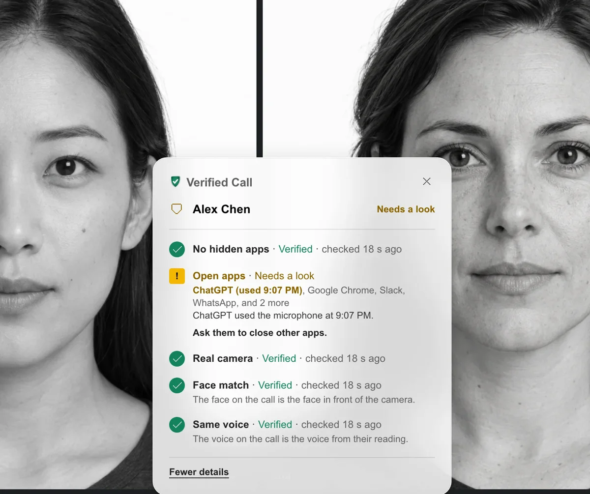
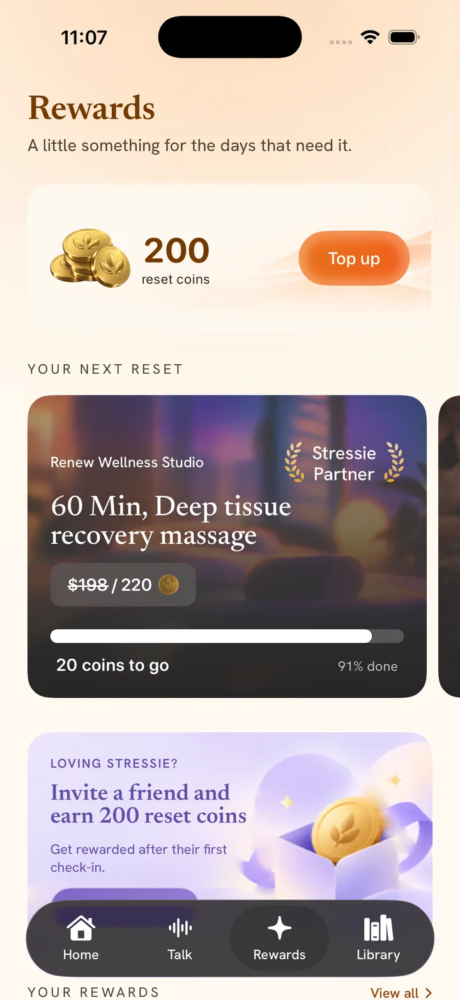
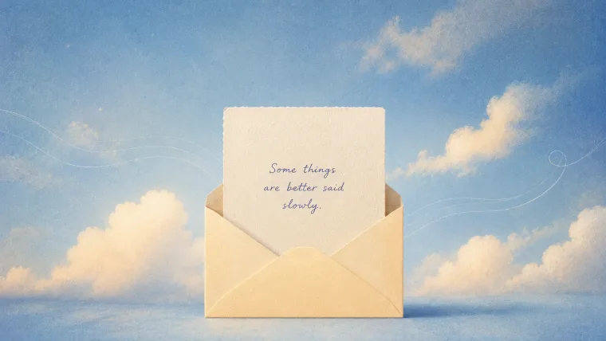

Hi, this is Bhanu Kowshik: product engineer shipping AI products from problem to code. Currently building Verified Call.
Currently building Verified CallDesign engineerCurrently building Verified Call
I design and build AI products that scale, convert, and connect.
- Figma
- Motion · GSAP
- WebGL · Three.js
- React
- TypeScript
- Next.js
- Electron
- Chrome extensions
- SwiftUI
- MediaPipe
- Transformers.js
- PyTorch
- AWS Rekognition
- Claude API
- ElevenLabs voice
- Agentic workflows
Selected work

Founder · design and build, solo
Verified Call
I'm building Verified Call solo, to remove cheating from video calls.
- 20companies in the closed beta
- 3 weeksto build, solo
- Electron
- React
- Chrome extension
- MediaPipe
- Amazon Rekognition
- Deepgram

Founding designer · Figma to SwiftUI
Stressie
A stress check-in that pays for your evening.
- 12% → 56%daily engagement
- $600Kfunding unlocked
- Figma
- SwiftUI
- Metal

Sole product designer · EverTutor
EverTutor Live
A voice AI tutor that took 1:1 tutoring from $250 to $5 an hour.
- 2,000+students a day
- $9.5Mseed-funded
- Figma

Sole product designer · EverTutor
EverTutor Studio
The studio teachers use to build EverTutor's lessons.
- 104h → 4hto make a lesson
- 3,000+lessons made
- Figma
- Next.js
- Tailwind
Sole product designer · EverTutor
EverTutor Analytics
Dense student data, turned into a real-time decision tool for educators.
- Real-timestudent insights
- Livein production
- Figma

Solo build · 48 hours
Dearly
Voice letters you can hear and keep.
- 140+letters sent
- 35five-star ratings
- React
- Framer Motion
- Supabase
- Vercel
Coast redwoods are the tallest living things on Earth, some over 380 feet.
Selected work
Selected work



Verified Call
I'm building Verified Call solo, to remove cheating from video calls.
20 companies in the closed beta3 weeks to build, soloNow in go-to-market
- Figma
- Electron
- React
- Next.js
- TypeScript
- Amazon Rekognition
- AI coding agents
Read case study →
EverTutor Live
A voice AI tutor that took 1:1 tutoring from $250 to $5 an hour.
2,000+ students a day8+ schools$9.5M seed-funded
- Figma
- Design system
- AI coding agents
Read case study →
EverTutor Studio
The studio teachers use to build EverTutor's lessons.
104h → 4h to make a lesson3,000+ lessons made
- Figma
- Next.js
- TypeScript
- Tailwind
- Design system
- AI coding agents
Read case study →
Stressie
Rebuilt a workplace wellness app around daily use: engagement from 12% to 56%. Helped unlock $600K in funding.
Read case study →

Stressie
A stress check-in that pays for your evening.
12% → 56% daily engagement$600K funding unlocked171 Swift files built solo
- Figma
- SwiftUI
- Swift
- Metal
- Localization
- AI coding agents
Read case study →

Dearly
Voice letters you can hear and keep.
140+ letters sent35 five-star ratings48 hours, built solo
- React
- Three.js
- Supabase
- ElevenLabs
- Claude API
- Vercel
Visit Dearly ↗
Short films on the psychology behind products people trust.
How I work.
Strategy and research up front, craft at the core, and I build what I design.
 making new friends 🐱
making new friends 🐱
 Key West, sunset o'clock ☀️
Key West, sunset o'clock ☀️
 Ladybird Lake, Austin 🛶
Ladybird Lake, Austin 🛶
Same curiosity,
different medium.
When the laptop closes, I trade pixels for paddle strokes, kayaking Ladybird Lake with Austin’s skyline at my back. I’m the person hunting the city’s best espresso, demanding chess rematches I probably won’t win, and befriending every cat in the room. Creativity doesn’t clock out. It just finds new playgrounds.
This section is still taking shape. Check back soon. It'll be worth the wait.
Numbers, stories, and proof points are being curated. This one matters too much to rush.